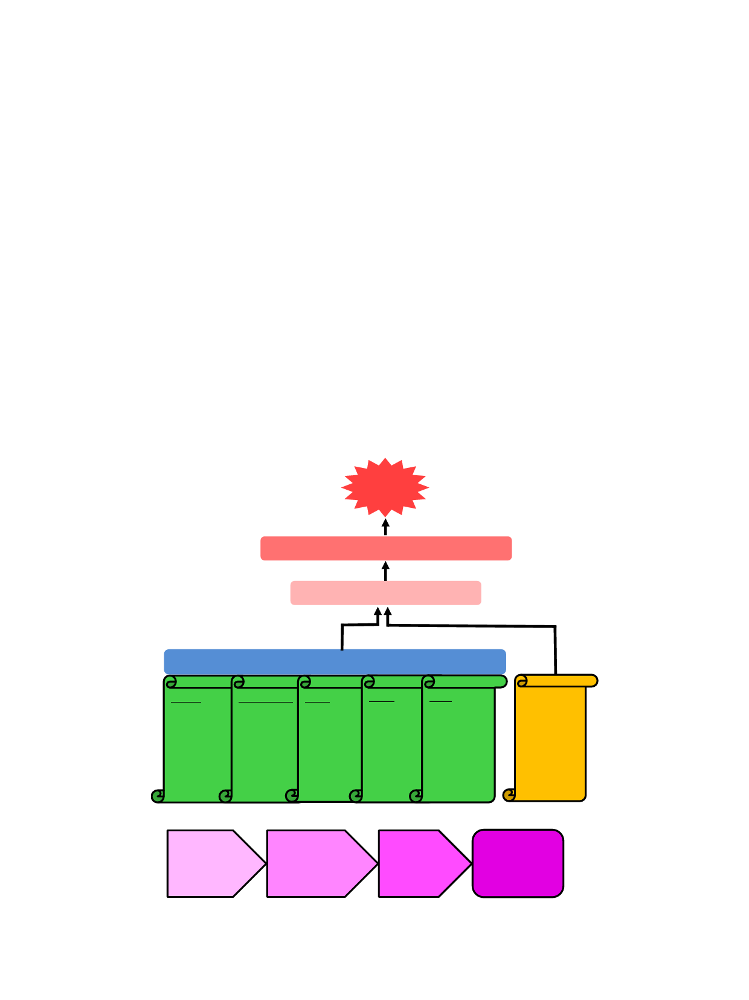

H. Nadeeshani, J. Li, T. Ying et al.
Currently, several studies have shown that NMN, the NAMPT
reaction product, is able to be utilised to trigger the SIRT1 activity
[27]. It has been shown that when there is not adequate NAD+
levels, SIRT1 becomes unable to block hypoxia-inducible factor 1
alpha (HIF-1) and elevated levels of which blocks the communica-
tion between mitochondria and nucleus at the cellular level and
between adipose tissue and hypothalamus at the systemic level
[28]. The resulting interruption in mitochondria and nuclear com-
munication causes swift reduction in mitochondrial function that
leads to the development of age-associated complications and dis-
eases. Nevertheless, the particular communication and mitochon-
drial function can be restored by the administration of NMN as
the NAD+ precursor [24]. Causes for reducing NAD+ levels when
aging and mechanism underlying anti-aging activity of NMN are
illustrated in Fig. 4. The nutraceutical industry has already started
to market NMN aggressively as a highly efficient and viable anti-
aging health product to enhance the NAD+ levels [15], thus to pro-
vide longevity to the general population. In addition, many studies
are carried out to investigate the potential anti-aging activity of
NMN and their applicability and usability.
Promises and efficacy as an anti-aging health product
Many studies have been carried out to investigate the promises
and efficacy of NMN as an anti-aging health product for managing
and regulating aging and age-associated complications and
diseases using cell culture, animal models and human clinical
Journal of Advanced Research 37 (2022) 267–278
investigations. In vivo studies, which have been carried out to
investigate anti-aging therapeutic effects of NMN administration,
are summarised in Table 1, including animal models, given NMN
dose, duration and observed effects. According to Yoshino et al.
[23], during the aging process, NAMPT and NAD+ levels signifi-
cantly decrease in various organs and NMN administration could
enhance NAD+ levels (from 500 to 1550 pmol/mg-tissue), insulin
secretion, insulin sensitivity and lipid profile in age-induced type
2 diabetic mice. Administration of NMN also can restore gene
expression linked to circadian rhythm, inflammatory response
and oxidative stress, and improve hepatic insulin sensitivity, par-
tially by SIRT1 activation.
De Picciotto et al. [29] found that NMN supplementation was
capable of restoring NAD+ levels (by threefold), vascular SIRT1
activity, maximum carotid artery endothelium-dependent dilation,
and nitric oxide-mediated carotid artery endothelium-dependent
dilation in mice. Kawamura et al. [30] have reported that NMN
retained in animals for longer period than nicotinamide. NMN
resulted in a higher yield of NAD+ (80 nmol/g of liver tissue) in sal-
vage biosynthesis pathway activating higher response of SIRT1
than nicotinamide.
Mills et al. [10] found that devoid of any apparent deleterious
effect or toxicity, NMN effectively suppressed aging-induced body
weight gain and ameliorated eye dysfunction in mice. It main-
tained healthy plasma lipid profile, insulin sensitivity, physical
activity, energy metabolism and other physiopathologies. Addi-
tionally, NMN supplementation averted alterations in age-
Aging
Downregulation of energy production in mitochondria
Depletion and reduction of NAD+ levels
Increasing NAD+ consuming enzymes
Sirtuins
Deacetylation,
deglutarylase,
lipoamidase,
demalonylase
and
desuccinylase
activities
CD38/CD157
Production of
cyclic ADP-
ribose and
nicotinamide
PARP
Formation of
branched
ADP-ribose
polymers for
DNA
repairing
TNKS
poly-ADP-
ribosylation
activity and
post-
translational
modification
of acceptor
proteins
BST1
Synthesis of
cyclic ADP-
ribose and
nicotinate-
adenine
dinucleotide
phosphate
Reduction of
NAD+
biosynthesis
by chronic
inflammation
and oxidative
stress
NMN
supplementation
Increase NAD+
biosynthesis
(Salvage and Preiss-
Handler pathways)
Increase NAD+
levels in body
Reverse the
aging process
Fig. 4. Causes for reducing NAD+ levels when aging and mechanism underlying anti-aging activity of NMN. DNA damage, chronic inflammation, oxidative stress and
increasing NAD+ consuming enzymes (sirtuins, CD38/CD157, PARP, TNKS and BST) accelerate NAD degradation. The reduced levels of NAD+ cause downregulation of energy
production in mitochondria, leading to aging and various age-associated diseases. NMN supplementation can reinstate NAD+ levels in the body through biosynthesis
pathways, reversing the aging process and preventing age-associated diseases.
270